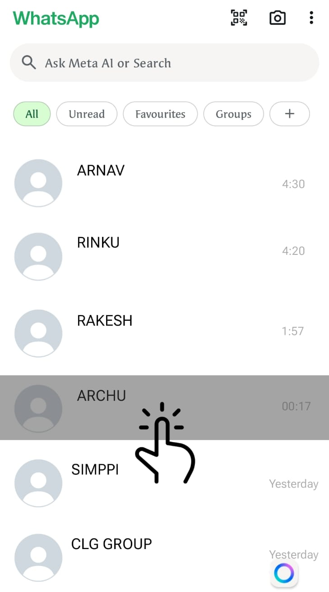
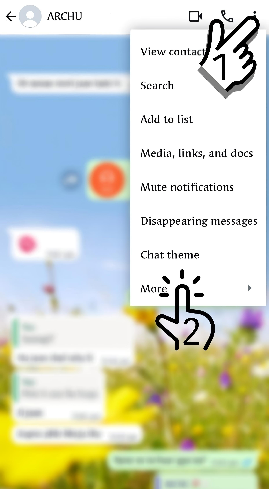
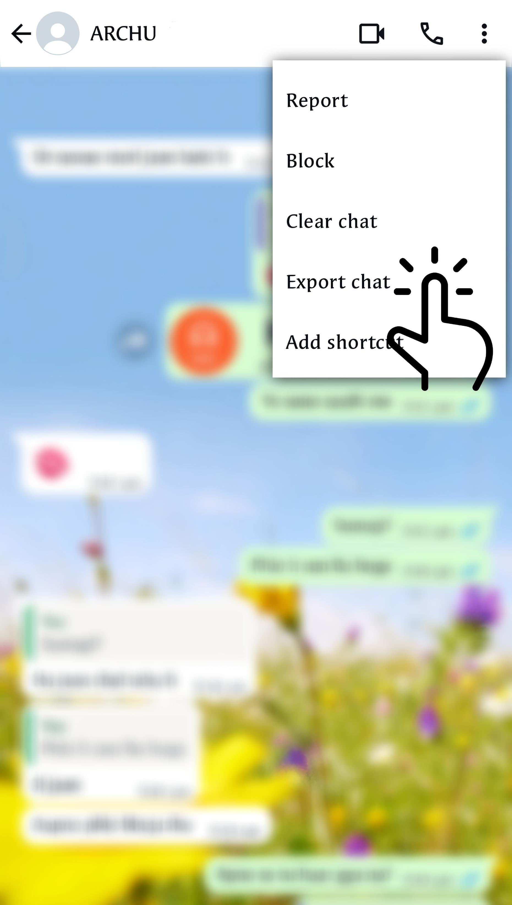
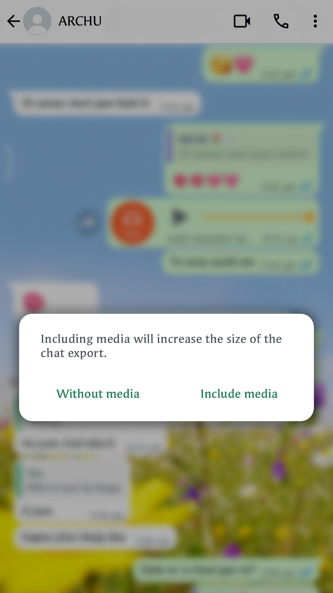
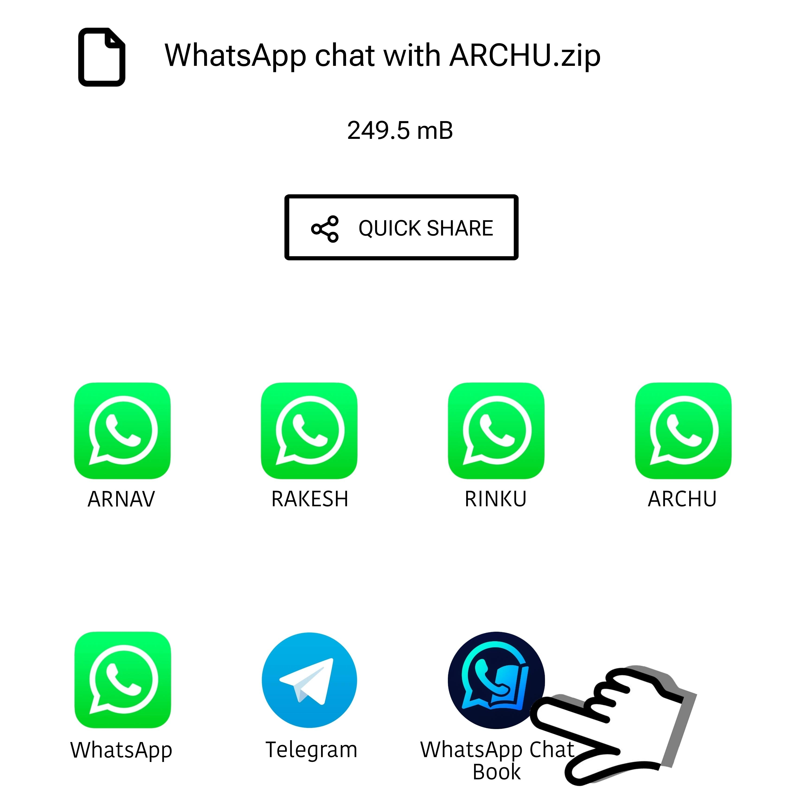

Welcome to Chat Book! This app transforms your memorable WhatsApp conversations into beautiful, shareable digital books. Whether it's heartfelt chats, funny moments, or meaningful messages, Chat Book helps you preserve and relive those conversations in a timeless format. Start your journey by exploring how it all works! Swipe to get started.
चैट बुक में आपका स्वागत है! यह ऐप आपकी यादगार व्हाट्सएप बातचीतों को खूबसूरत, साझा करने योग्य डिजिटल किताबों में बदल देता है। चाहे वह दिल से की गई बातें हों, मजेदार पल हों, या महत्वपूर्ण संदेश हों, चैट बुक आपकी उन बातचीतों को एक कालातीत प्रारूप में संरक्षित और पुनः जीने में मदद करता है। जानें कि यह कैसे काम करता है और अपनी यात्रा शुरू करें! प्रारंभ करने के लिए स्वाइप करें।
Open WhatsApp and click on the chat you want to turn into a book.
व्हाट्सएप खोलें और उस चैट पर क्लिक करें जिसे आप किताब में बदलना चाहते हैं।

Tap on three dots on the upper right corner and then click on "More".
ऊपरी दाएं कोने में तीन बिंदुओं पर टैप करें और फिर "अधिक" पर क्लिक करें।

Now tap on "Export Chat".
अब "चैट निर्यात करें" पर टैप करें।

Now select "Include Media" or "Without Media" however you want to export.
अब "मीडिया शामिल करें" या "बिना मीडिया" का चयन करें, जैसा आप निर्यात करना चाहते हैं।

Now select the WhatsApp Chat Book app from the list.
अब सूची से व्हाट्सएप चैट बुक एप चुनें।
